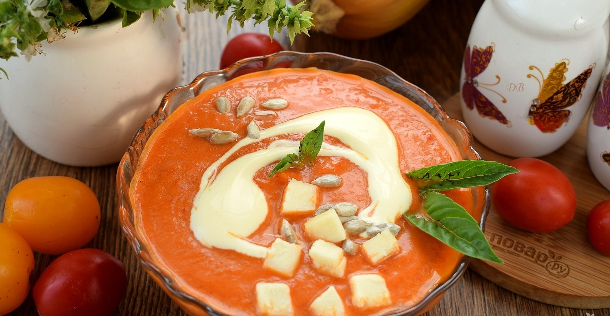

приготовление:
-
Разрезать 1 небольшую тыкву (≈ 500–600 г) на дольки. Кожуру можно оставить. Запекать при 200 °C примерно 40 минут, проверяя готовность зубочисткой: мякоть должна стать мягкой. Дать тыкве немного остыть.
-
Помыть и нарезать 4 стебля сельдерея, очистить и нарезать 1 крупную луковицу. Обжарить овощи на сковороде с небольшим количеством масла в течение 5 минут.
-
Довести до кипения 1 л овощного бульона или 1 л воды с овощным бульонным концентратом. Очистить 1 крупную или 2 средние картофелины, нарезать небольшими кусочками и добавить в бульон. Варить 13 минут.
-
Добавить к сельдерею и луку 1 банку измельчённых томатов, посолить и поперчить. Продолжать готовить зажарку на среднем огне.
-
Помыть и нарезать 1 стебель лука-порея, добавить в бульон к картофелю и продолжать варить до окончания 13 минут.
-
Пока варятся картофель и порей, снять кожуру с запечённой тыквы или выбрать мягкую мякоть ложкой.
-
Через 13 минут добавить в кастрюлю томатную зажарку и мякоть тыквы. Добавить 1 ч. л. копчёной паприки, 1 ч. л. сушёного чеснока, 1 ч. л. молотого кориандра и 2–3 ч. л. пасты харисса. Варить ещё 1–2 минуты.
-
Измельчить суп погружным блендером до однородности.
-
Слить жидкость из 1 банки консервированного нута. Добавить 240 г нута в суп и прогреть ещё 2–3 минуты. Попробовать и при необходимости досолить.